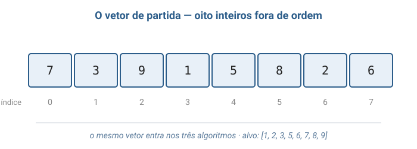
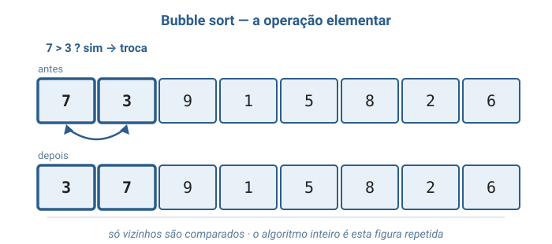
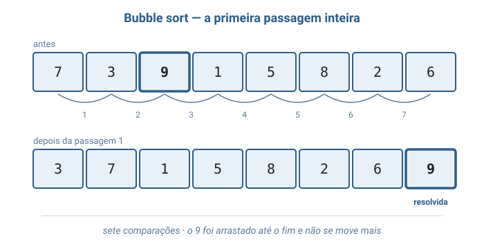
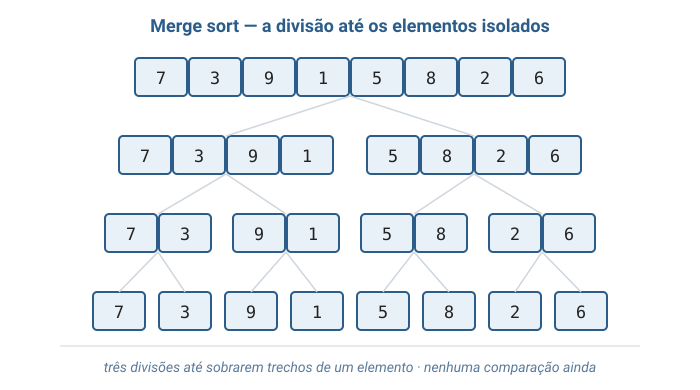
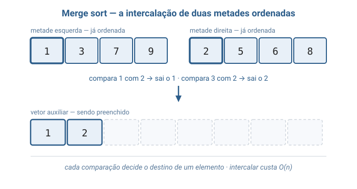
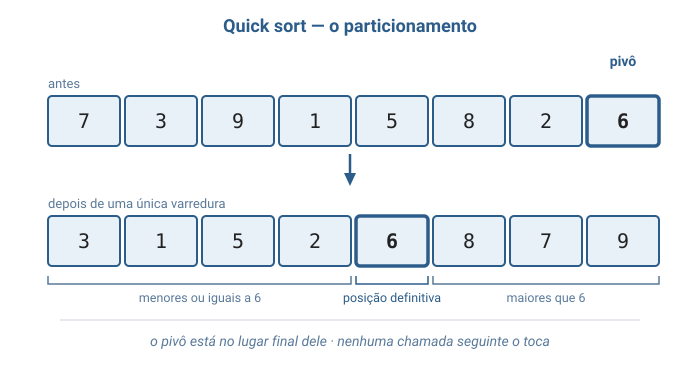
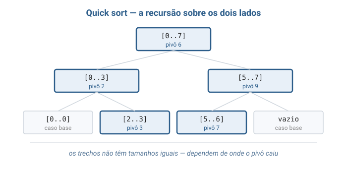
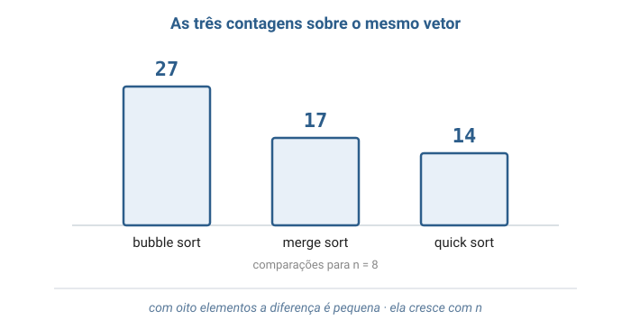

Algoritmos e Estruturas de dados
Unirios
Aula 04
Ordenação
Bubble sort · Merge sort · Quick sort
Aula de implementação — três caminhos para o mesmo resultado, com custos que diferem por fatores de milhares.
Camada 1
As cartas na mão
Você recebe seis cartas de uma vez e quer segurá-las em ordem. Ninguém precisa ensinar: você vê a que está fora de lugar e a encaixa onde deveria estar.
Existe mais de um caminho para chegar à mesma mão ordenada. O que muda é quanto trabalho cada caminho custa.
Camada 2
O que é ordenar
Ordenar é rearranjar os elementos para que fiquem em uma ordem determinada. Aqui: um vetor de inteiros, em ordem crescente.
O valor que decide a ordem chama-se chave. Num vetor de inteiros a chave é o próprio número — mas poderia ser a nota de um aluno ou o preço de um produto.
Só existem duas ações
Todo algoritmo desta aula é feito de duas ações elementares — e contá-las é como se mede o custo, independentemente da máquina.
- Comparar — qual destes dois é o menor?
- Movimentar — trocar dois de lugar, ou copiar um para outro lugar.
Os três algoritmos
Mesma entrada, mesmo resultado, três estratégias diferentes.
- Bubble sort — compara vizinhos e troca os que estão fora de ordem.
- Merge sort — divide em duas metades, ordena cada uma e intercala as duas.
- Quick sort — escolhe um pivô e joga os menores para um lado, os maiores para o outro.
Divisão e conquista
Merge sort e quick sort pertencem à mesma família de estratégia: resolver um problema quebrando-o em problemas menores do mesmo tipo e combinando os resultados.
O bubble sort não é dessa família — ele ataca o vetor inteiro de uma vez, repetidas vezes.

Turma, tanto Backes quanto Veloso e Pereira apresentam primeiro os métodos elementares e só depois os de divisão e conquista. A ordem não é acidental: é olhando o bubble sort custar caro que a gente entende por que valeu a pena inventar os outros dois. Backes, capítulo de métodos de ordenação · Veloso & Pereira, capítulo de ordenação
Camada 3
O vetor e o índice
Um vetor guarda elementos lado a lado, e cada um é acessado por um número inteiro chamado índice.
O que importa aqui: ler v[0] ou v[7] custa
o mesmo. Ninguém precisa passar pelos anteriores.
A troca precisa de uma terceira variável
Parece detalhe, mas é onde quase todo mundo erra na primeira vez.
int guardado = vetor[i]; /* sem esta linha, o valor de vetor[i] se perde */
vetor[i] = vetor[j];
vetor[j] = guardado;
Sem guardado, a primeira atribuição apaga
vetor[i] antes de ele ser copiado — e o vetor termina com o
mesmo elemento duas vezes.
Recursão e caso base
Dois dos três algoritmos chamam a si mesmos para resolver uma versão menor do mesmo problema. Isso é recursão.
Para não repetir para sempre, toda recursão precisa de um caso base. Aqui ele é sempre o mesmo: um trecho de zero ou um elemento já está ordenado.
Bubble sort — o que uma passagem faz
Uma passagem caminha do início ao fim comparando cada elemento com o vizinho da direita e trocando quando o da esquerda é maior.
Toda passagem termina com o maior elemento ainda solto na última posição. Ele vence todas as comparações e é arrastado até a borda.
Logo, depois da passagem i as i últimas posições estão resolvidas — e a passagem seguinte já pode parar antes delas.
A parada antecipada
Se uma passagem inteira termina sem nenhuma troca, não existe mais nenhum par de vizinhos fora de ordem — o vetor está ordenado.
Uma linha de código a mais. Num vetor que já chega ordenado, o custo cai de O(n²) para O(n).
Lê-se: de "cresce no ritmo de n ao quadrado" para "cresce no ritmo de n".
Merge sort — a pergunta é outra
Em vez de "como conserto este vetor?", o merge sort pergunta: "como junto duas partes que já estão certas?"
Junta-se dois montes de cartas já arrumados: olha a de cima de cada monte, pega a menor, repete. É a intercalação.
Duas propriedades da intercalação
Elas explicam o custo e a memória extra do merge sort inteiro.
- Cada comparação decide o destino de um elemento — juntar n elementos custa menos de n comparações: é O(n).
- Ela lê dos dois trechos ao mesmo tempo, então precisa escrever em um vetor auxiliar. Essa é a memória que o merge sort cobra.
O algoritmo inteiro em três linhas
Com a intercalação pronta, o resto é quase trivial de enunciar.
Para ordenar um trecho: ordene a metade esquerda, ordene a metade direita, intercale as duas.
Repare onde mora o trabalho: a ida só divide, sem comparar nada. Toda a ordenação acontece na volta.
Por que dá n log n
A divisão pela metade cria níveis: um trecho de n, depois dois de n/2, depois quatro de n/4.
- Cada nível percorre os n elementos uma vez — custo n.
- O número de níveis é quantas vezes dá para dividir n por 2 até chegar a 1 — isso é o logaritmo de n na base 2.
n níveis × n por nível → O(n log n)
Lê-se: "cresce no ritmo de n vezes o log de n". E vale sempre — a divisão não depende dos valores.
Quick sort — dividir pelo valor
O quick sort também divide, mas divide pelo valor, não pela posição.
Ele escolhe um elemento como pivô e rearranja o trecho: menores ou iguais à esquerda, maiores à direita. Isso é o particionamento.
A posição definitiva
É a afirmação mais forte de todo o algoritmo — e ela vale sempre.
Terminado o particionamento, o pivô está exatamente onde estará no vetor ordenado. Nenhuma chamada seguinte precisa tocá-lo.
O motivo: a posição final de um elemento depende só de quantos são menores que ele — e é isso que o particionamento acaba de contar.
Tudo depende de onde o pivô cai
Aqui está a força e a fraqueza do quick sort, no mesmo lugar.
- Pivô perto do meio dos valores: dois lados de tamanho parecido, mesmos níveis do merge sort → O(n log n).
- Pivô sempre no extremo: um lado vazio, o outro com n − 1 → n níveis → O(n²).
Com o pivô fixo no último elemento, o pior caso é o vetor já ordenado.
O que vale sempre — as invariantes
São as afirmações que precisam continuar verdadeiras a cada passo. É o que garante que o algoritmo está correto.
- Bubble — depois da passagem i, as i últimas posições têm os maiores, já em ordem.
- Merge — a intercalação só recebe trechos que já estão ordenados.
- Quick — depois de particionar, os dois lados nunca mais se comparam entre si.
- Nos três — o vetor final tem exatamente os mesmos elementos do inicial.
Camada 4
O problema, dito com precisão
Ordenar não é só "sair em ordem". A definição cobra duas coisas ao mesmo tempo.
Entrada: uma sequencia de n numeros A = (a1, a2, ..., an)
Saida: uma REORDENACAO da mesma A' = (a'1, a'2, ..., a'n)
com a'1 <= a'2 <= ... <= a'n
Devolver (1, 2, 3) para a entrada (3, 3, 1) está
errado: está em ordem, mas perdeu um 3 e inventou um 2.
Estável ou não
Um algoritmo é estável quando elementos de chaves iguais terminam na mesma ordem em que estavam.
Numa lista de alunos já em ordem alfabética, reordenada por nota: o estável entrega os de mesma nota ainda em ordem alfabética.
Bubble e merge são estáveis. Quick não é — uma troca pode arremessar um elemento por cima de outros iguais.
Quanta memória extra
Um algoritmo é in-place quando usa memória adicional constante — o mesmo tanto para dez ou dez milhões de elementos.
- Bubble — in-place: dois índices e uma variável de troca.
- Merge — não: o vetor auxiliar é O(n).
- Quick — não aloca nada, mas as chamadas recursivas pendentes ocupam memória: O(log n) tipicamente.
O que a notação O responde
Não contamos passos exatos. Respondemos uma pergunta só: quando a entrada cresce, o trabalho cresce em que ritmo?
n(n − 1)/2 comparações → O(n²)
Lê-se: "cresce no ritmo de n ao quadrado". Constantes e termos menores são descartados de propósito — eles não mudam o ritmo.
A definição matemática completa está no material escrito da aula.
Existe algo melhor que n log n?
Para algoritmos que ordenam comparando elementos — os três desta aula —, a resposta é não. E isso é um teorema.
O merge sort não é apenas bom: ele é o melhor possível nessa classe. Ninguém vai vencê-lo por uma classe inteira de complexidade.
Turma, esse limite não é chute de quem testou muito: é contagem. Uma sequência de n elementos admite um número enorme de ordens possíveis, e cada comparação só separa esses casos em dois grupos. Não há como isolar a ordem certa com menos comparações do que isso. Toscani & Veloso, capítulo de limites inferiores
Camada 5
Os três lado a lado
Nenhuma linha é melhor que as outras em todas as colunas — e é justamente por isso que os três continuam existindo.
| Algoritmo | Melhor | Médio | Pior | Memória extra | Estável |
|---|---|---|---|---|---|
| Bubble | O(n) | O(n²) | O(n²) | O(1) | sim |
| Merge | O(n log n) | O(n log n) | O(n log n) | O(n) | sim |
| Quick | O(n log n) | O(n log n) | O(n²) | O(log n) | não |
O que isso significa em número
Comparações no pior caso, e o tempo numa máquina que faça cem milhões de comparações por segundo.
| n | Bubble | Merge | Tempo bubble | Tempo merge |
|---|---|---|---|---|
| 8 | 28 | 24 | instantâneo | instantâneo |
| 1.000 | 499.500 | 9.966 | 0,005 s | 0,0001 s |
| 100.000 | ~5 bilhões | 1.660.964 | ~50 segundos | ~0,02 segundo |
| 1.000.000 | ~500 bilhões | 19.931.569 | ~1h23min | ~0,2 segundo |
Multiplicar o vetor por mil multiplica por um milhão o trabalho do bubble sort.
Então por que usar o quick sort?
Ele tem o pior caso mais feio da tabela — e mesmo assim costuma ser o mais rápido na prática. A tabela esconde por quê.
- A notação descarta constantes. As do quick sort são pequenas: ele não aloca nada e não copia para lugar nenhum.
- O merge sort paga, a cada nível, uma alocação e uma cópia de ida e volta — trabalho que o O(n log n) não mostra, mas o relógio mostra.
Não existe "o melhor algoritmo"
A pergunta certa nunca é qual é o melhor. É qual restrição pesa mais aqui.
- Preciso de tempo garantido no pior caso → merge sort.
- Memória apertada → quick sort ou bubble sort.
- Vetor pequeno ou quase ordenado → bubble sort e parentes.
Ordenar um milhão de inteiros com merge sort exige um vetor auxiliar de um milhão de inteiros — memória que pode simplesmente não existir.
Camada 6
Onde ordenação aparece
Quase sempre sem se anunciar como ordenação.
ORDER BYem bancos de dados.- Produtos por preço, rankings, placares, feeds.
- Ordenar para procurar rápido — em vetor ordenado dá para descartar metade dos candidatos a cada comparação.
- Detectar duplicatas — depois de ordenar, os repetidos ficam vizinhos.
- Mediana e percentis: é o elemento do meio do vetor ordenado.
Os vizinhos e as variantes
A família é grande, e os três desta aula têm parentes próximos que vale reconhecer pelo nome.
- Selection sort — pega o menor e põe na primeira posição, e repete. O mínimo de trocas possível.
- Insertion sort — insere cada novo elemento no lugar certo entre os já arrumados. É como a maioria ordena cartas na mão.
- Mediana de três — escolhe o pivô olhando três elementos, e o pior caso do quick sort deixa de ser alcançado por vetores ordenados.
- Merge externo — ordena arquivos maiores que a memória disponível, intercalando pedaços lidos do disco.
Bloco 2
Visualização gráfica
Sempre o mesmo vetor — [7, 3, 9, 1, 5, 8, 2, 6] — para os três
algoritmos poderem ser comparados.
Passo 1 — o vetor de partida
Oito inteiros fora de ordem, com os índices marcados embaixo. É daqui que os três algoritmos partem.

Passo 2 — bubble sort, a operação elementar
Repare que só vizinhos se comparam: o 7 nunca é comparado direto com o 6 do fim.

Passo 3 — bubble sort, a primeira passagem
Acompanhe o 9: ele é encontrado na terceira caixa e vai sendo empurrado, uma troca de cada vez, até o fim.

Sete comparações · a última posição fica resolvida e a próxima passagem já pode ignorá-la.
Passo 4 — merge sort, a divisão
Conte os degraus: são três divisões até sobrarem trechos de um elemento — e 8 dividido por 2 três vezes chega a 1.

Nenhuma comparação aconteceu ainda. A ida apenas divide.
Passo 5 — merge sort, a intercalação
As duas metades já estão ordenadas. Cada comparação olha só os dois primeiros ainda não usados e decide quem sai.

Passo 6 — quick sort, o particionamento
Uma varredura só, e o 6 já está no lugar definitivo dele. Os dois lados ainda estão bagunçados — e tudo bem.

Passo 7 — quick sort, a recursão
Diferente do merge sort, os trechos não têm tamanhos iguais: eles dependem de onde o pivô caiu.

Bastaram cinco particionamentos: três trechos tinham um só elemento e pararam no caso base.
Passo 8 — as três contagens
Mesmo vetor, mesmo resultado, três custos. Guarde a comparação — ela muda de figura quando n cresce.

Bloco 3
Por que isso importa?
Como uma loja virtual com quarenta mil produtos mostra a lista inteira do mais barato para o mais caro em menos de um segundo?
A conta dos quarenta mil
A mesma máquina, a mesma lista. Só muda o algoritmo.
- Bubble sort — cerca de 800 milhões de comparações: oito segundos.
- Merge ou quick — cerca de 610 mil comparações: seis milésimos de segundo.
A diferença entre a página que responde e a página que trava não está no servidor. Está na escolha do algoritmo.
Ordenar uma vez, consultar muitas
Este é o motivo mais comum de ordenar alguma coisa — e ele não aparece na tela de ninguém.
- Vetor desordenado: achar um elemento exige olhar um a um.
- Vetor ordenado: dá para comparar com o do meio e descartar metade de uma vez. Dezesseis comparações para os mesmos quarenta mil.
Ordenar custa caro uma vez. A busca fica barata para sempre.
Ordenar como etapa do meio
Descobrir se há produtos duplicados parece exigir comparar cada um com todos os outros: oitocentos milhões de pares.
Ordene primeiro. Os duplicados ficam necessariamente vizinhos, e uma passagem de quarenta mil comparações resolve.
Ordenar transformou um problema quadrático num problema n log n. É por isso que ordenação aparece dentro de tantos algoritmos que nada têm a ver com ordem.
Turma, o quick sort tem dono e data: foi criado por Tony Hoare no fim dos anos 1950, quando ele era estudante e precisava ordenar palavras para um projeto de tradução automática do russo. O nome não é marketing — na época, ordenar rápido era literalmente o problema que ele tinha na mesa.
Bloco 4
Analogias
As cartas na mão
Olhe o primeiro par de cartas vizinhas. Se a da esquerda for maior, troque. Passe para o par seguinte e repita até o fim do leque.
Uma varredura nunca ordena de primeira — mas sempre empurra a maior carta para a ponta. Quando uma varredura passa sem nenhuma troca, acabou.
A analogia mostra até o defeito: uma carta pequena na ponta direita precisa de uma varredura inteira para andar uma posição.
A correção de provas em dupla
Cem provas para entregar em ordem de nota, e duas pessoas para fazer isso.
Cada uma leva cinquenta, ordena as suas, e no fim as duas juntam: olham a de cima de cada monte e põem a menor sobre a mesa. Isso é o merge sort — inclusive o espaço livre da mesa, que é o vetor auxiliar.
A mesma dupla, outra estratégia
Agora elas nem dividem em quantidades iguais. Pegam uma prova qualquer, de nota 6, e separam a pilha em "abaixo de 6" e "acima de 6".
A prova de nota 6 já vai para o lugar exato dela e nunca mais é tocada. Cada uma leva um monte e repete lá dentro. Isso é o quick sort.
E o risco aparece na analogia: se a prova escolhida for a de maior nota, um monte fica com tudo e o outro fica vazio. O trabalho não foi repartido.
Bloco 5
Código em C
Um único arquivo: ordenacao.c
Tudo vive no mesmo lugar — os #include, os contadores, os três
algoritmos e a main().
A ideia é ler o programa de cima a baixo, sem saltar entre arquivos.
gcc -Wall -Wextra -o ordenacao_demo ordenacao.c
./ordenacao_demo
Os printf dentro dos algoritmos existem só para a aula: eles
tornam visível cada passagem, cada intercalação e cada partição.
A troca
A função mais curta do arquivo — e a que todo o bubble sort e todo o quick sort usam.
/*
* Troca de lugar os elementos das posicoes i e j.
*
* A variavel guardado e indispensavel: sem ela, a primeira atribuicao
* sobrescreveria vetor[i] e o valor antigo estaria perdido antes de ser
* copiado para vetor[j].
*/
void trocar(int vetor[], int i, int j) {
int guardado = vetor[i];
vetor[i] = vetor[j];
vetor[j] = guardado;
trocas++;
}
Bubble sort
Dois laços. Repare no tamanho - 1 - i do laço de dentro.
void bubble_sort(int vetor[], int tamanho) {
int i, j;
int houve_troca;
for (i = 0; i < tamanho - 1; i++) {
houve_troca = 0;
for (j = 0; j < tamanho - 1 - i; j++) {
comparacoes++;
if (vetor[j] > vetor[j + 1]) {
trocar(vetor, j, j + 1);
houve_troca = 1;
}
}
printf(" passagem %d: ", i + 1);
imprimir_vetor(vetor, tamanho);
/* Uma passagem inteira sem nenhuma troca significa que nao existe
mais nenhum par vizinho fora de ordem - ou seja, o vetor ja esta
ordenado e continuar seria desperdicio. */
if (houve_troca == 0) {
printf(" nenhuma troca nesta passagem: o vetor ja esta ordenado\n");
return;
}
}
}
Intercalar — a comparação
Enquanto as duas metades têm elementos, cada comparação decide de qual delas sai o próximo valor.
void intercalar(int vetor[], int inicio, int meio, int fim) {
int tamanho = fim - inicio + 1;
int i = inicio; /* proxima posicao a ser lida na metade esquerda */
int j = meio + 1; /* proxima posicao a ser lida na metade direita */
int k = 0; /* proxima posicao a ser escrita no auxiliar */
int* auxiliar = malloc(tamanho * sizeof(int));
if (auxiliar == NULL) {
printf("erro: memoria insuficiente\n");
exit(1);
}
/* Enquanto as duas metades ainda tem elementos, a comparacao decide de
qual delas sai o proximo menor valor. */
while (i <= meio && j <= fim) {
comparacoes++;
if (vetor[i] <= vetor[j]) {
auxiliar[k] = vetor[i];
i++;
} else {
auxiliar[k] = vetor[j];
j++;
}
k++;
}
Intercalar — o que sobrou
Uma das metades acaba antes. O resto da outra já está ordenado e é maior que tudo — vai direto, sem comparação nenhuma.
/* Uma das metades acabou antes da outra. O que sobrou na outra ja esta
ordenado e e maior que tudo o que ja foi copiado, entao vai direto,
sem comparacao nenhuma. */
while (i <= meio) {
auxiliar[k] = vetor[i];
i++;
k++;
}
while (j <= fim) {
auxiliar[k] = vetor[j];
j++;
k++;
}
for (k = 0; k < tamanho; k++) {
vetor[inicio + k] = auxiliar[k];
copias++;
}
printf(" intercalando [%d..%d] com [%d..%d]: ", inicio, meio, meio + 1, fim);
imprimir_vetor(auxiliar, tamanho);
free(auxiliar);
}
Merge sort
O algoritmo inteiro são quatro linhas: caso base, divide, ordena os dois lados, intercala.
void merge_sort(int vetor[], int inicio, int fim) {
int meio;
if (inicio >= fim) {
return;
}
meio = (inicio + fim) / 2;
merge_sort(vetor, inicio, meio);
merge_sort(vetor, meio + 1, fim);
intercalar(vetor, inicio, meio, fim);
}
Particionar
A variável menor é a fronteira: até ela, já se sabe que tudo é
menor ou igual ao pivô. Ela nasce em inicio - 1 porque a região
começa vazia.
int particionar(int vetor[], int inicio, int fim) {
int pivo = vetor[fim];
int menor = inicio - 1;
int j;
for (j = inicio; j < fim; j++) {
comparacoes++;
if (vetor[j] <= pivo) {
menor++;
/* Quando menor e j sao a mesma posicao, esta troca e do elemento
com ele mesmo: nao muda nada e so acontece porque o elemento ja
estava no lado certo. */
trocar(vetor, menor, j);
}
}
/* O pivo estava guardado no fim do trecho. Agora ele vai para a primeira
posicao depois da regiao dos menores - a sua posicao DEFINITIVA no
vetor ordenado, que nenhuma chamada seguinte vai mexer. */
trocar(vetor, menor + 1, fim);
printf(" pivo %d no trecho [%d..%d]: ", pivo, inicio, fim);
imprimir_trecho(vetor, inicio, fim);
return menor + 1;
}
Quick sort
Compare com o merge sort: aqui o trabalho acontece na ida,
dentro de particionar. A volta não faz nada.
void quick_sort(int vetor[], int inicio, int fim) {
int posicao_pivo;
if (inicio >= fim) {
return;
}
posicao_pivo = particionar(vetor, inicio, fim);
quick_sort(vetor, inicio, posicao_pivo - 1);
quick_sort(vetor, posicao_pivo + 1, fim);
}
A saída — bubble sort
Acompanhe o 9: ele chega ao fim já na passagem 1 e não se move mais.
Vetor original: [7, 3, 9, 1, 5, 8, 2, 6]
[1] Bubble sort
passagem 1: [3, 7, 1, 5, 8, 2, 6, 9]
passagem 2: [3, 1, 5, 7, 2, 6, 8, 9]
passagem 3: [1, 3, 5, 2, 6, 7, 8, 9]
passagem 4: [1, 3, 2, 5, 6, 7, 8, 9]
passagem 5: [1, 2, 3, 5, 6, 7, 8, 9]
passagem 6: [1, 2, 3, 5, 6, 7, 8, 9]
nenhuma troca nesta passagem: o vetor ja esta ordenado
27 comparacoes, 15 trocas
A passagem 6 não troca nada e o algoritmo para ali. Sem a parada antecipada, faria a sétima passagem à toa.
A saída — merge sort
A ordem das linhas revela a recursão: as duas primeiras juntam trechos de um elemento, e só a última vê o vetor inteiro.
[2] Merge sort
intercalando [0..0] com [1..1]: [3, 7]
intercalando [2..2] com [3..3]: [1, 9]
intercalando [0..1] com [2..3]: [1, 3, 7, 9]
intercalando [4..4] com [5..5]: [5, 8]
intercalando [6..6] com [7..7]: [2, 6]
intercalando [4..5] com [6..7]: [2, 5, 6, 8]
intercalando [0..3] com [4..7]: [1, 2, 3, 5, 6, 7, 8, 9]
17 comparacoes, 24 copias de volta do auxiliar para o vetor
Nada foi comparado na descida. Toda comparação aconteceu na subida.
A saída — quick sort
O pivô 6 da primeira linha fica na posição 4 até o fim do programa — a posição definitiva, exatamente como prometido.
[3] Quick sort
pivo 6 no trecho [0..7]: [3, 1, 5, 2, 6, 8, 7, 9]
pivo 2 no trecho [0..3]: [1, 2, 5, 3]
pivo 3 no trecho [2..3]: [3, 5]
pivo 9 no trecho [5..7]: [8, 7, 9]
pivo 7 no trecho [5..6]: [7, 8]
14 comparacoes, 12 trocas
Resumo para n = 8
bubble sort: 27 comparacoes
merge sort: 17 comparacoes
quick sort: 14 comparacoes
Turma, atenção a uma armadilha do particionar: o pivô é sempre o
último elemento do trecho. Isso é simples de escrever, mas
significa que um vetor já ordenado é o pior caso do quick sort —
cada partição deixa um lado vazio. O algoritmo mais rápido da aula vira o mais
lento justamente na entrada que parecia mais fácil.
Bloco 6
Exercício
Um só, para fazer agora. Os demais estão no material escrito.
Turma, antes de escrever qualquer linha: em cada um dos três algoritmos existe uma comparação que decide o que é "estar na ordem certa". Encontrem essas três linhas primeiro. Depois disso o exercício vira quase mecânico — e se mexerem em qualquer outra coisa, é sinal de que acharam a linha errada.
Exercício — os três em ordem decrescente
Modifique bubble_sort, intercalar e
particionar para que ordenem do maior para o menor.
Faça a menor mudança possível em cada um e escreva, em uma frase por algoritmo,
qual comparação foi invertida e por quê.
- Os três produzem
[9, 8, 7, 6, 5, 3, 2, 1]. - Mudou um operador por algoritmo — nada além disso.
- As contagens continuam 27, 17 e 14: o número de comparações não depende do sentido da ordem.
- Compila sem nenhum aviso com
-Wall -Wextra.
Referências
- Backes, A. R. — Algoritmos e Estruturas de Dados em Linguagem C. LTC, 2023. Capítulo de métodos de ordenação.
- Veloso, P.; Pereira, S. do L. — Estruturas de Dados em C: uma abordagem didática. Saraiva, 2016. Capítulo de ordenação.
- Toscani, L. V.; Veloso, P. A. S. — Complexidade de Algoritmos. Bookman, 2012. Recorrências e limites inferiores.
- Schildt, H. — C Completo e Total. Makron Books, 1997.
Vetores, alocação dinâmica e a função
qsort.
Leituras complementares:
- Wirth — Algoritmos e Estruturas de Dados — a apresentação clássica dos métodos.
- Damas — Linguagem C — vetores e ponteiros em profundidade.
- Forouzan & Gilbert · Ford & Topp · Jamsa & Klander — contraste em pseudocódigo e C++.
Fim — Ordenação
Perguntas
Três algoritmos, o mesmo resultado e custos que se separam quando n cresce.